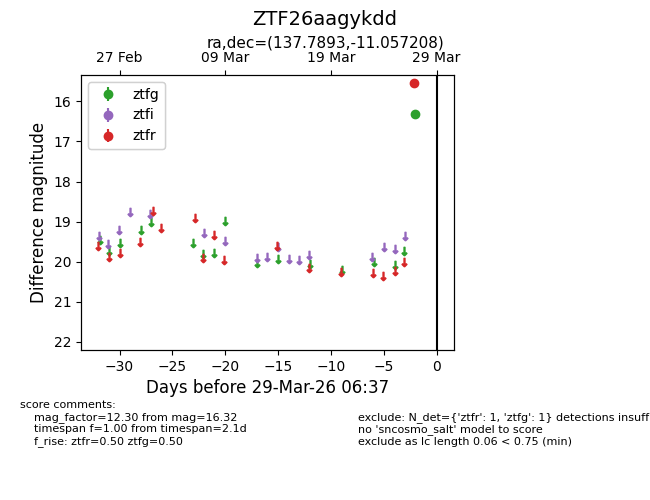
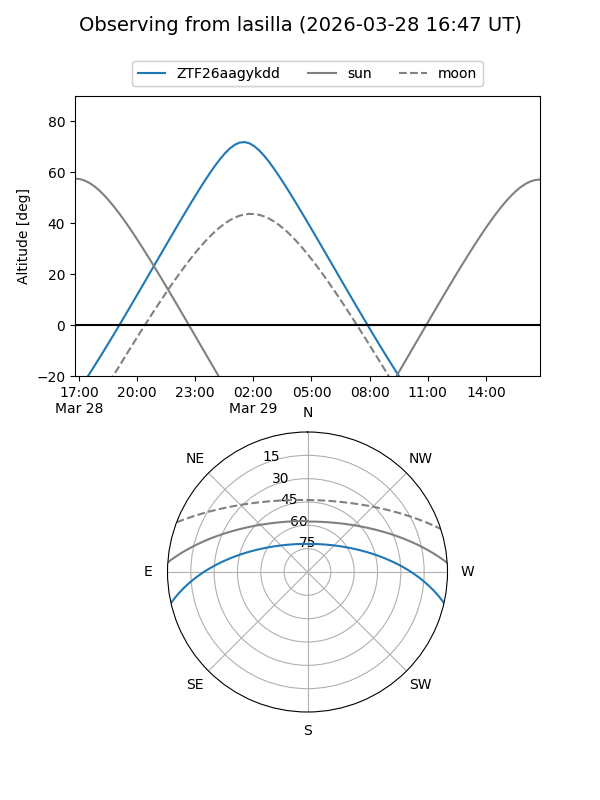
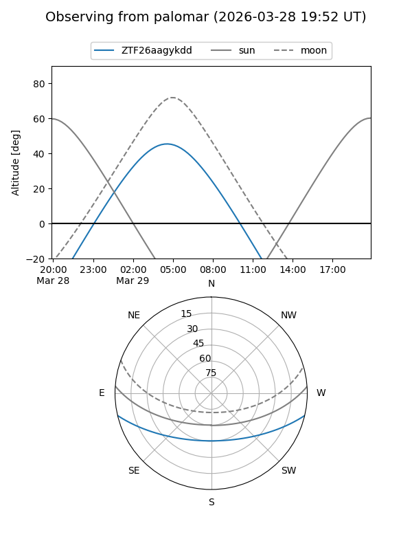

ZTF26aagykdd
Target ZTF26aagykdd at 2026-03-29 06:40
Aliases and brokers:
FINK: link
Lasair: link
ALeRCE: link
alt names
ZTF26aagykdd (ztf,fink_ztf)
Coordinates:
equatorial (ra, dec) = 137.7893,-11.05721
equatorial (HMS+DMS) = 09:11:09.44,-11:03:25.95
galactic (l, b) = (240.8817,+24.37272)
Flags:
Photometry:
last ztfg=16.32, ztfr=15.54
1 ztfg, 1 ztfr detections
Lightcurve

Visibility


Additional plots